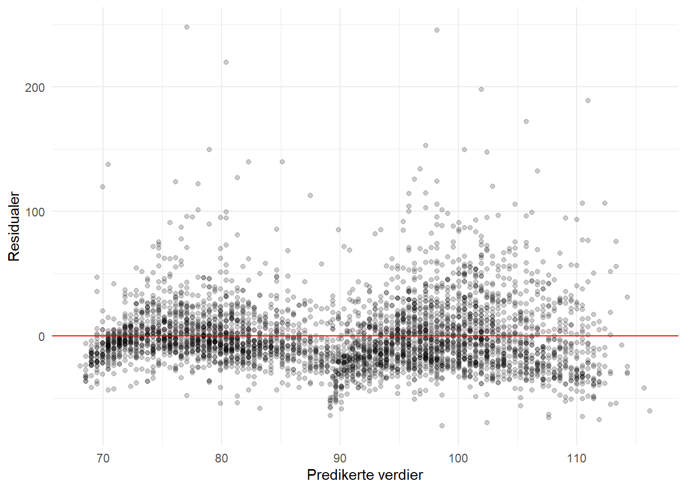
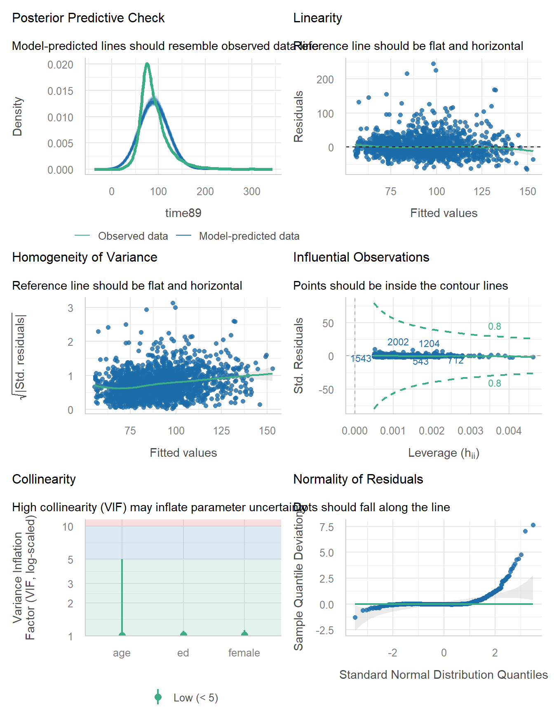

library(tidyverse)
library(haven)11 Modelldiagnostikk
Når vi estimerer en regresjonsmodell gjør vi en del antakelser om dataene. Disse antakelsene er ikke bare formaliteter – de har betydning for om vi kan stole på resultatene. Modelldiagnostikk handler om å sjekke om disse antakelsene holder rimelig godt. Heldigvis finnes det enkle grafiske verktøy og tester som gjør dette ganske oversiktlig.
Vi bruker en enkel regresjonsmodell som utgangspunkt for diagnostikken. Her predikerer vi timelønn med alder og kjønn:
mod1 <- lm(time89 ~ age + female, data = abu89)
summary(mod1)
Call:
lm(formula = time89 ~ age + female, data = abu89)
Residuals:
Min 1Q Median 3Q Max
-72.37 -17.12 -4.90 10.99 247.94
Coefficients:
Estimate Std. Error t value Pr(>|t|)
(Intercept) 81.10147 1.58497 51.17 <2e-16 ***
age 0.47380 0.03684 12.86 <2e-16 ***
female -20.62511 0.91186 -22.62 <2e-16 ***
---
Signif. codes: 0 '***' 0.001 '**' 0.01 '*' 0.05 '.' 0.1 ' ' 1
Residual standard error: 27.89 on 3756 degrees of freedom
Multiple R-squared: 0.1539, Adjusted R-squared: 0.1535
F-statistic: 341.7 on 2 and 3756 DF, p-value: < 2.2e-1611.1 Hva er det vi sjekker?
De viktigste antakelsene i lineær regresjon er:
- Linearitet: Sammenhengen mellom forklaringsvariable og utfallsvariabel er tilnærmet lineær.
- Normalfordelte residualer: Residualene (avvikene fra regresjonslinjen) er tilnærmet normalfordelt.
- Homoskedastisitet: Variansen i residualene er omtrent lik for alle verdier av forklaringsvariablene.
- Ingen ekstreme observasjoner som alene driver resultatene.
- Ingen alvorlig multikollinearitet: Forklaringsvariablene er ikke for sterkt korrelert med hverandre.
Ingen av disse trenger å holde perfekt. Regresjon er ganske robust, og poenget er å avdekke grove brudd som kan påvirke konklusjonene.
11.2 Residualplot: Residualer mot predikerte verdier
Det mest grunnleggende diagnostiske plottet er å sette residualene opp mot de predikerte (fitted) verdiene. Hvis alt er som det skal, vil punktene ligge tilfeldig spredt rundt null uten noe tydelig mønster.
abu89 <- abu89 %>%
mutate(fitted_val = fitted(mod1),
resid_val = residuals(mod1))
ggplot(abu89, aes(x = fitted_val, y = resid_val)) +
geom_point(alpha = .2) +
geom_hline(yintercept = 0, col = "red") +
labs(x = "Predikerte verdier", y = "Residualer") +
theme_minimal()
Her ser vi etter systematiske mønstre. Hvis punktene danner en trakt (vifteform), tyder det på heteroskedastisitet. Hvis det er en kurve, kan det tyde på at sammenhengen ikke er lineær. I dette tilfellet ser vi at variansen ser ut til å øke noe med predikerte verdier, og det er noen observasjoner med veldig store residualer.
11.3 QQ-plot for normalitet
Et QQ-plot (quantile-quantile plot) sammenligner fordelingen av residualene med en teoretisk normalfordeling. Hvis residualene er normalfordelt, vil punktene ligge omtrent langs en rett linje.
ggplot(abu89, aes(sample = resid_val)) +
stat_qq(alpha = .2) +
stat_qq_line(col = "red") +
labs(x = "Teoretiske kvantiler", y = "Observerte kvantiler") +
theme_minimal()
Her ser vi at punktene følger linjen rimelig bra i midten, men avviker i halene. Det betyr at fordelingen har tyngre haler enn normalfordelingen. Med store utvalg er dette sjelden et stort problem for estimatene, men det er greit å vite om.
11.4 De fire standard diagnostikkplottene
R har en innebygd funksjon som gir fire diagnostiske plot samtidig. Man bruker bare plot() på et lm-objekt:
par(mfrow = c(2, 2))
plot(mod1)
par(mfrow = c(1, 1))Disse fire plottene viser:
- Residuals vs Fitted: Sjekker linearitet og homoskedastisitet (det vi allerede har sett på).
- Normal Q-Q: Sjekker normalitet i residualene.
- Scale-Location: Sjekker homoskedastisitet. Linjen bør være tilnærmet flat.
- Residuals vs Leverage: Identifiserer innflytelsesrike observasjoner.
Legg merke til at R merker noen observasjoner med radnummer. Det er de mest avvikende observasjonene som du kanskje bør se nærmere på.
11.5 Heteroskedastisitet
Heteroskedastisitet betyr at variansen i residualene varierer systematisk. Det påvirker ikke selve estimatene, men det gjør at standardfeilene kan bli feil – og dermed også p-verdier og konfidensintervaller.
Vi har allerede sett visuelt etter dette i residualplottet. Man kan også bruke en formell test. Breusch-Pagan-testen sjekker om variansen i residualene korrelerer med de predikerte verdiene:
library(lmtest)
bptest(mod1)
studentized Breusch-Pagan test
data: mod1
BP = 30.972, df = 2, p-value = 1.882e-07En lav p-verdi (under 0.05) tyder på at heteroskedastisitet er til stede. Men husk at med store utvalg vil selv små avvik bli statistisk signifikante, så det visuelle inntrykket fra residualplottet er vel så viktig.
11.6 Innflytelsesrike observasjoner og Cooks avstand
Noen enkeltobservasjoner kan ha uforholdsmessig stor innflytelse på regresjonsresultatene. Cooks avstand (Cook’s distance) er et samlemål for hvor mye hvert datapunkt påvirker de estimerte koeffisientene. En tommelfingerregel er at verdier over \(4/n\) (der \(n\) er antall observasjoner) bør undersøkes nærmere.
abu89 <- abu89 %>%
mutate(cooks_d = cooks.distance(mod1))
ggplot(abu89, aes(x = seq_along(cooks_d), y = cooks_d)) +
geom_point(alpha = .3) +
geom_hline(yintercept = 4 / nrow(abu89), col = "red", linetype = "dashed") +
labs(x = "Observasjon", y = "Cooks avstand") +
theme_minimal()
Punktene over den røde linjen er observasjoner som har relativt stor innflytelse. Det betyr ikke nødvendigvis at de er feil eller at de bør fjernes, men det er lurt å sjekke hva slags observasjoner det er. I lønnsdata er det gjerne folk med uvanlig høy inntekt som trekker resultatene.
11.7 Multikollinearitet og VIF
Multikollinearitet oppstår når forklaringsvariablene er sterkt korrelert med hverandre. Det gjør at det blir vanskelig å skille effektene fra hverandre, og standardfeilene blåses opp.
VIF (Variance Inflation Factor) måler dette. En VIF på 1 betyr ingen korrelasjon med andre forklaringsvariable. Tommelfingerregler varierer, men VIF over 5 gir grunn til bekymring, og over 10 er et klart problem.
La oss utvide modellen med noen flere variable og sjekke VIF:
mod2 <- lm(time89 ~ age + female + ed, data = abu89)
library(car)
vif(mod2) age female ed
1.004787 1.015293 1.019662 Her ser vi at VIF-verdiene er lave, noe som betyr at multikollinearitet ikke er et problem i denne modellen. Hvis du hadde inkludert variable som i praksis måler det samme, ville VIF blitt høyere.
11.8 Rask diagnostikk med performance-pakken
Pakken {performance} har en veldig nyttig funksjon som gjør mye av diagnostikken i ett steg. Funksjonen check_model() lager et sett med diagnostiske plot som dekker de viktigste antakelsene.
library(performance)
check_model(mod2)
Dette gir deg et samlet bilde av modellens egenskaper, inkludert linearitet, homoskedastisitet, normalitet, innflytelsesrike observasjoner og multikollinearitet. Det er en fin snarvei for en rask sjekk.
Du kan også få en tekstbasert oppsummering:
check_model(mod2, check = "all") |> summary() Length Class Mode
VIF 3 check_collinearity list
QQ 2 data.frame list
NORM 3 data.frame list
NCV 2 data.frame list
HOMOGENEITY 2 data.frame list
OUTLIERS 3759 check_outliers logical
INFLUENTIAL 7 data.frame list
PP_CHECK 51 performance_pp_check list 11.9 Hva gjør man hvis antakelsene brytes?
I praksis er det sjelden at alle antakelser holder perfekt. Her er noen praktiske råd:
Heteroskedastisitet: Bruk robuste standardfeil. Det endrer ikke estimatene, men gir korrekte standardfeil og p-verdier. I R kan du bruke pakken {sandwich} sammen med {lmtest}, eller rapportere robuste standardfeil direkte via {modelsummary}.
Ikke-normalfordelte residualer: Med store utvalg (over noen hundre observasjoner) er dette sjelden et problem for estimatene eller standardfeilene takket være sentralgrenseteoremet. Men det kan tyde på at modellen mangler noe viktig.
Innflytelsesrike observasjoner: Sjekk hva slags observasjoner det er. Kjør modellen med og uten disse observasjonene. Hvis resultatene endrer seg mye, bør du diskutere dette.
Ikke-linearitet: Vurder å transformere variablene (f.eks. logaritme) eller inkludere polynomiske ledd.
Multikollinearitet: Vurder om du trenger alle variablene i modellen. Kanskje noen av dem måler det samme og du kan droppe en av dem.
Det viktigste er at du faktisk sjekker antakelsene. Det er mye bedre å gjøre en enkel sjekk og diskutere eventuelle problemer enn å ignorere diagnostikk fullstendig. Og husk: ingen modell er perfekt. Poenget er at den er nyttig nok til å fortelle oss noe meningsfullt om dataene.